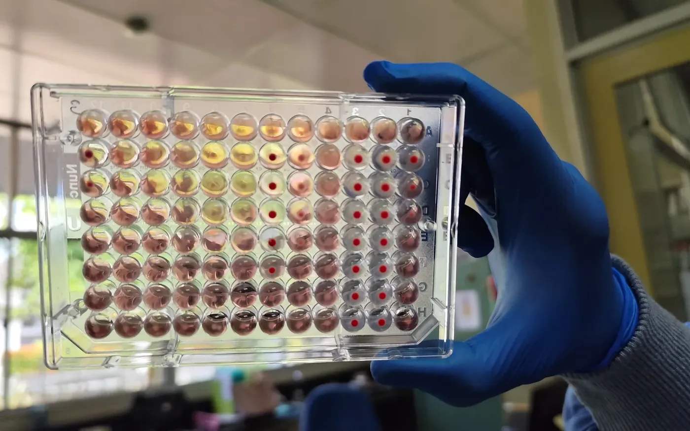
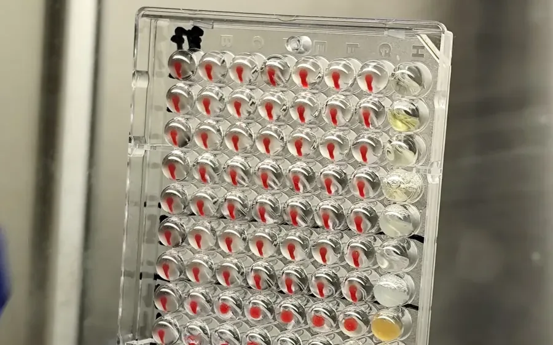
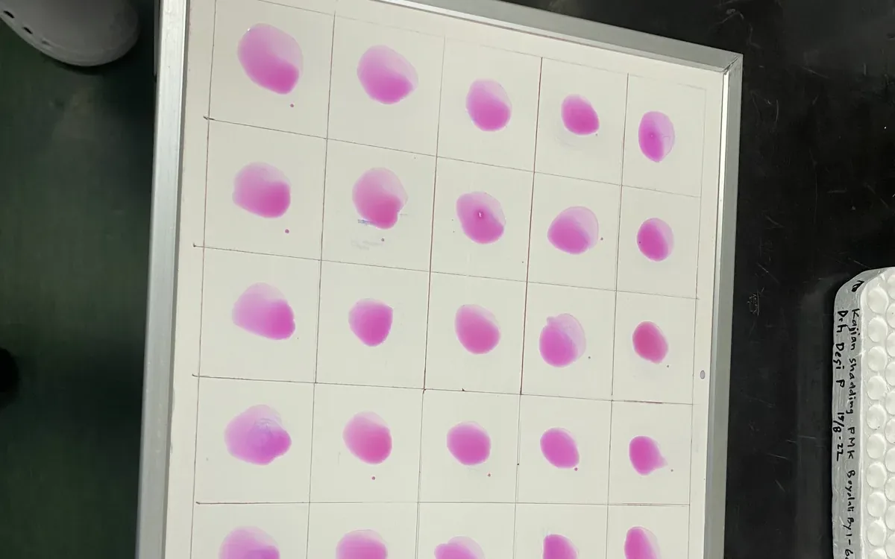
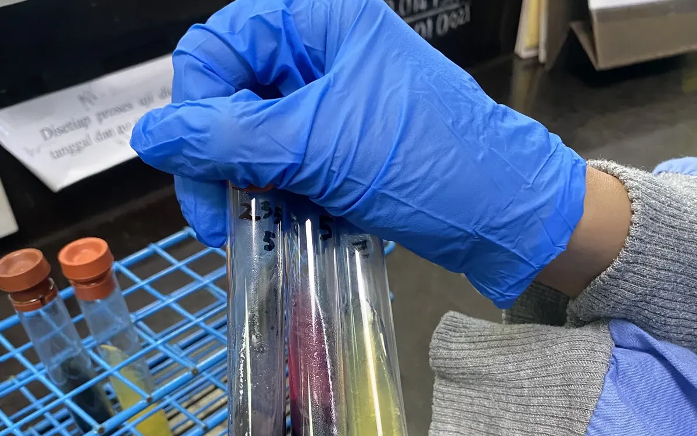
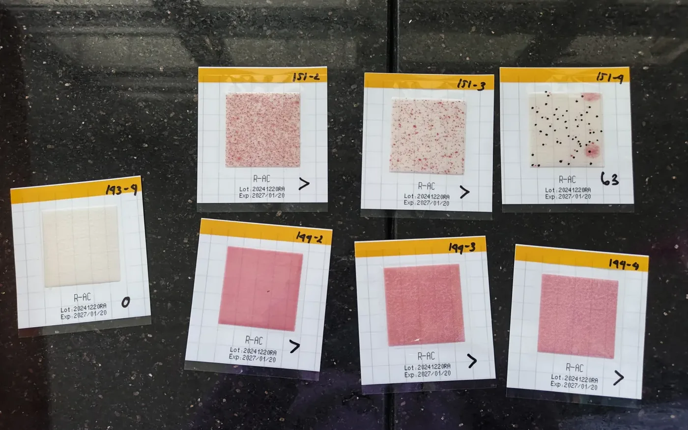
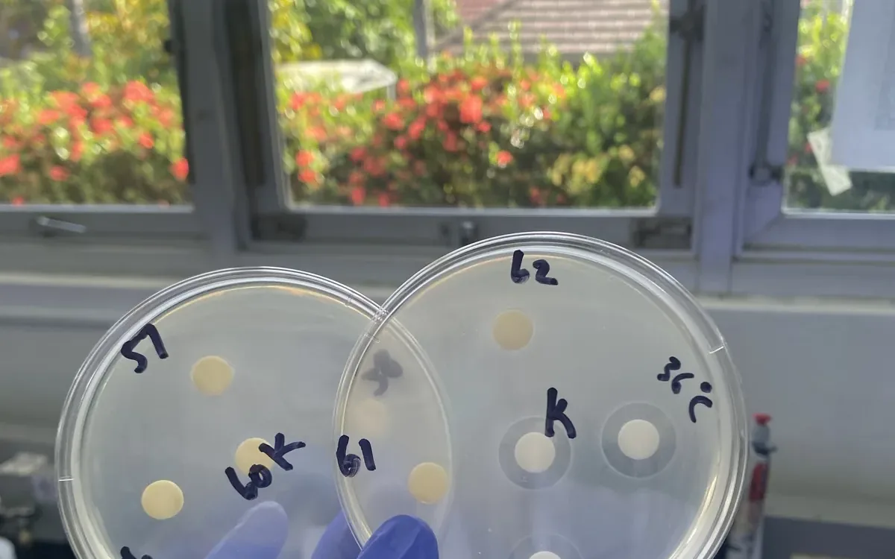
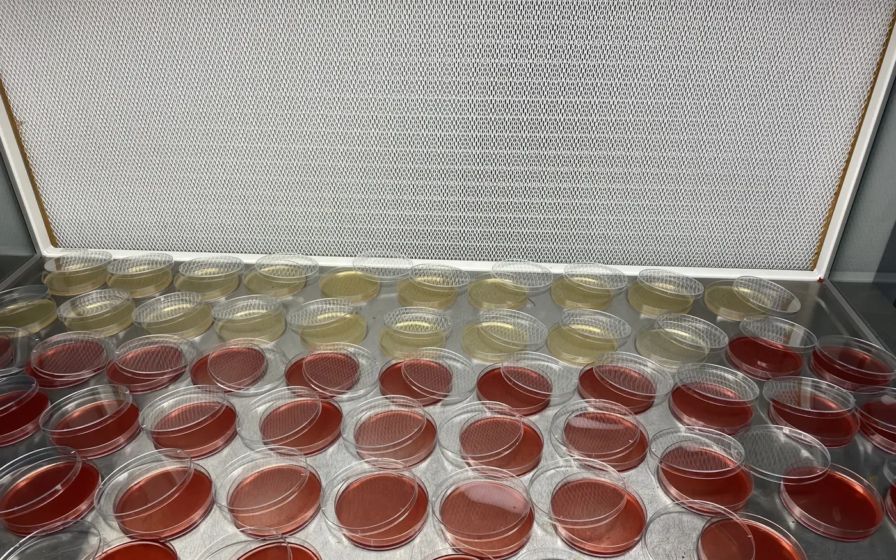
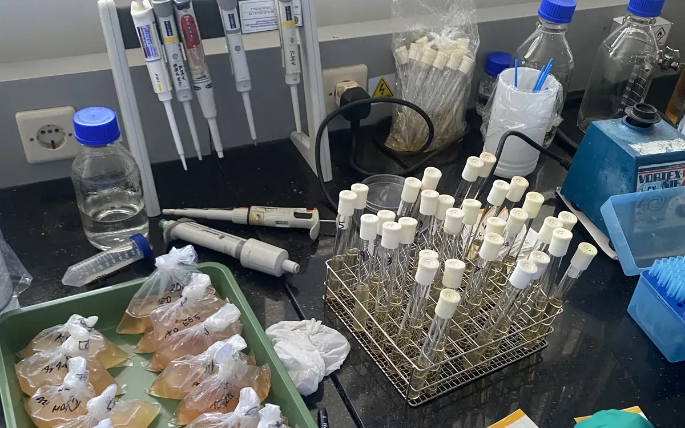

Latar & tujuan
Praktek Kerja Lapangan di Balai Besar Veteriner (BBVet) Wates, Yogyakarta berlangsung satu bulan penuh dalam rangkaian pengujian laboratorium balai. Tujuannya memahami alur kerja diagnostik veteriner yang sebenarnya, dari penerimaan sampel hingga penerbitan hasil.
Surat Keterangan PKL diterbitkan atas nama Ais Hidayatul Uyun, NIM 220602110029, dari UIN Maulana Malik Ibrahim Malang, untuk kegiatan pengujian laboratorium pada tanggal 01 Juli sampai 01 Agustus 2025 (Nomor: 04010/HM.240/F4.C/08/2025).
Ruang lingkup pengujian
- Serologi — ELISA, HA/HI (Hemagglutination & Inhibition), dan RBT (Rose Bengal Test).
- Molekuler — pengujian PMK (Penyakit Mulut dan Kuku) dan uji Rabies.
- Mikrobiologi pangan — TPC (Total Plate Count) metode tuang dan horizontal, uji E. coli & Coliform, serta uji cemaran mikroba.
- Residu — pengujian residu antibiotik pada sampel produk asal hewan.
- Bakteriologi klinis — uji koagulasi pada sampel terduga Staphylococcus.
- Dukukung teknis — preparasi media, uji agar miring, dan penegakan prosedur laboratorium.
Yang saya pelajari
Nilai terbesar dari PKL ini bukan hafalan protokol, tetapi disiplin alur kerja: ketelusuran sampel, validitas kontrol positif dan negatif pada setiap pengujian serologi, serta pencatatan hasil yang dapat diaudit. Pengujian HA/HI dan ELISA sangat sensitif terhadap kesalahan kecil pada tahap pencucian dan pengenceran, sehingga akurasi lebih menentukan daripada kecepatan.
Galeri pengujian







